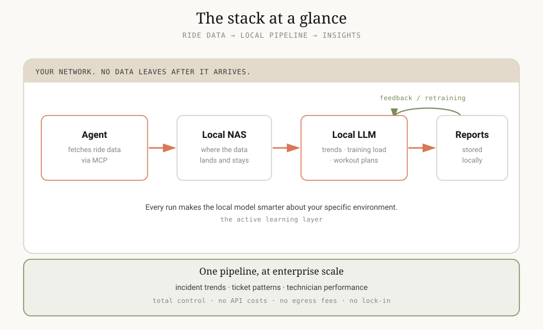

A hybrid cloud/local stack for my cycling data, and what it means for enterprise ops
The workflow I am most excited about right now is running a hybrid cloud/local stack to analyze my cycling data.
It works like this. My agent fetches ride data over MCP and downloads it to my local NAS. From there a local model crunches the numbers: trend analysis, training load, custom workout plans. It stores the report locally. No data leaves my network once it arrives.

Now the shift to enterprise IT/AV ops. The parallels could not be cleaner.
I can store and analyze incident trends, ticket patterns, and technician performance data in an environment where my team has total control over the pipeline. No third-party API costs. No data egress fees. No vendor lock-in on my own operational history.
There is a security angle, and it matters: keeping PII and confidential data out of the cloud. But the bigger advantage for me is the active learning layer. You build historical context over time instead of packaging up and shipping huge datasets to the cloud again and again. Every run makes your local model smarter about your specific environment.
Listening to the fans spin up on my homelab while a local model crunches ride data and comes back with insights I actually use? That is the kind of thing that makes me excited about where this is headed, at home and at work.
The discipline is the same whether the fleet is bikes or ticket queues: keep the data where it has to stay, build context where it compounds, and let the AI do the heavy lifting under your control.